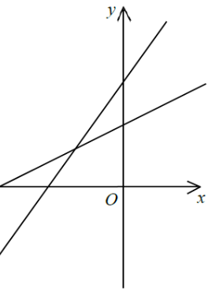

In the figure, the equations of the straight lines $L_1$ and $L_2$ are $3x+ay=b$ and $cx+y=d$ respectively. Which of the following is/are true?
I. $ac<3$
II. $ad<b$
III. $bc<3d$

Rewrite each line in slope-intercept form $y=mx+k$:
$$L_1:\; y=-\frac{3}{a}x+\frac{b}{a}\quad\Rightarrow\quad m_1=-\frac{3}{a}$$
$$L_2:\; y=-cx+d\quad\Rightarrow\quad m_2=-c$$
Both lines rise to the right → both slopes are positive. $L_1$ is steeper → $m_1>m_2$.
Since $m_1>0$ and $m_2>0$:
$$-\frac{3}{a}>0 \;\Rightarrow\; a<0 \qquad\text{and}\qquad -c>0 \;\Rightarrow\; c<0$$
A positive slope with $-3/a$ forces $a$ to be negative (same for $c$).
$L_1$ steeper than $L_2$ means $m_1>m_2$:
$$-\frac{3}{a}>-c \;\Longrightarrow\; 3>ac \quad (\text{multiply by }-a>0)$$
$$\boxed{\,ac<3\,}\quad\text{— TRUE}$$
The $y$-intercept of $L_1$ is greater than that of $L_2$:
$$\frac{b}{a}>d \;\Longrightarrow\; b<ad \quad (\text{multiply by }a<0,\ \text{flip sign})$$
i.e. $ad>b$, so $ad<b$ is FALSE.
The $x$-intercept of $L_1$ (set $y=0$: $x=\dfrac{b}{3}$) is larger than that of $L_2$ (set $y=0$: $x=\dfrac{d}{c}$):
$$\frac{b}{3}>\frac{d}{c} \;\Longrightarrow\; bc<3d \quad (\text{multiply by }3c<0,\ \text{flip sign})$$
$$\boxed{\,bc<3d\,}\quad\text{— TRUE}$$
Statements I and III are true; statement II is false.
Hence the answer is option D.